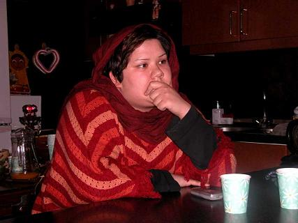

در سايه روشن روز، در حالي كه به ديوارآجري روبروي در ورودي قوه قضاييه تكيه داده ايم،زير ديد مستقيم دوربين سر به فلك كشيده با مادرت به گفتگو
مي پردازم. نگاهش صميمي است و درست مثل خودت خنده بر لب دارد. جابجا مي شوم،سر بر مي گردانم، و دوستانم را كه حلقه وارمانند برگ ها ي سبز رزي او را در ميان گرفته اند، مي بينم .
باد فرمان دور شويد را از دهان سرباز وظيفه مي قاپد، چهره همه مادران مصمم است و با استواري مرتب پا به پا مي شوند، نگاههايمان در هم گره مي خورد، به گوهر خيره مي شوم، كه مرتب زير لب دعا مي خواند و تسبيح مي گرداند .
ناهيد، طلعت، فخري، فرخنده، احترام، شهلا، خديجه...با سكوت با هم فكر مي كنيم و هر از گاهي قطره اشكي مستاصل يا لبخندي اميدوار صورتمان را دگرگون مي كند .

"من شيدا اقدسي زاده مادر دلارام علي هستم. خيلي چيزها دلم مي خواهد كه بگويم ولي نمي دانم از كجا شروع كنم ."
- درباره دلارام وفعاليت هايش بگوييد؟
- من به عنوان يك مادر به دلارام افتخار ميكنم، این بچه هیچوقت یک ریال هم برای خودش نخواسته است. دلارام فعاليت هايش را از سال اول دانشگاه شروع كرد، مدد كاري مي خواند و به بچه هاي كار و بچه هاي خياباني در پارك ها درس مي داد. زمان زلزله بم به خرج خانواده به آن جا رفت.
دلارام سه روز بعد از زلزله بم با قطار باري و با وسايلي كه از بازار تهران گرفته بود، به بم رفت. البته زماني كه اصناف در بازار تهران مي فهمند که آنها براي زلزله دیدگان بم جنس مي خواهند، خيلي كمك مي كنند و قيمت ها را بسيار ارزان مي گيرند و مواردي را هم مجاني حساب مي كنند. بعد از زلزله، عيد يا تابستان يا هر زمان ديگري كه پولي به دست مي آورد، به بم مي رفت.
عيد بعد از زلزله به دلارام كه آن موقع با ما زندگي مي كرد گفتيم كه در سال نو بايد پيش ما باشي وما تنها هستيم- چون فرزند ديگرمان هم خارج از ايران زندگي مي كند- مثلا اعضاي خانواده بايد دور هم باشند، اما او گفت كه من ساليان سال پيش شما هستم اما بمی ها هستند كه بچه هایشان و خانواده هایشان را از دست داده اند. رفت و آن سال، تحويل را در قبرستان بم گذراند كه فيلمش هم هست. حالا حكمش آمده كه براي فعاليت های انسان دوستانه و برابری خواهانه اش باید دو سال و نيم به زندان برود. من واقعا نمي دانم براي چه!
- براي شما تعريف كرد كه چه اتفاقي در 22 خرداد افتاد؟
- آن طور كه خودش تعريف مي كند در آن روز از سه تا پنج بعد از ظهر امتحان داشت. بعد از پايان امتحان، طبق قراري كه با دوستانش داشت خود را به گردهمايي زنان در ميدان هفت تير مي رساند که از دور صداي فرياد دوستانش را مي شنود و نزديك مي شود، مي بيند كه چگونه مردم را مي زنند. ناگهان متوجه يكي از دوستانش مي شود كه بر اثر پاشيدن اسپري فلفل و گاز اشك آوركنار خيابان افتاده است و استفراغ مي كند. دلارام كمك مي خواهد. در همين هنگام نيروي انتظامي آنها را وادار مي كند كه دور شوند اما دلارام چون نگران دوستش هست مي ماند. بعد باران باتوم و ناسزا بر سرش مي بارد، او را بر روي زمين مي كشند که دستش مي شكند. زنان پليس دلارام را كه براي دفاع ازحقوق زنان به آنجا رفته بود، كشان كشان به داخل ماشين هل مي دهند. دليلش را نمي دانم ، چون نه بلند گويي دستش بود نه شعاري مي داد اما حكمش را تبليغ عليه نظام دادند. آيا اين سزاواراست؟
- دلارام از زمان دستگیری تا صدور حکم چه کرد؟
- او در اين مدت به خارج از ايران رفت اما برگشت؛ اگر دلارام مملكتش را دوست نداشت که بر نمي گشت. مي توانست به ايران برنگردد و خانواده هم او را تآمين مي كرد. اما برگشت. مي گفت:" من اين كشور را دوست دارم، اين مردم را دوست دارم، اين بچه ها را دوست دارم."
حالا بعد از اين همه وقت، هر وقت دادگاه او را خواسته، سر وقت رفته است. در آخرين دادگاه هم نگذاشتند وكيلش به صورت كتبي از او دفاع كند و به صورت شفاهي دفاع كرد. الان هم سه ماه است ازدواج كرده مي گويند باید دو سال و نیم برود زندان؟! آخر بگويند دختر من آيا دنبال مواد مخدربوده است؟ آیا باید بچه هاي ما را که رایگان برای اين مملكت زحمت مي كشند، به زندان بیاندازند؟ من واقعا نمي دانم! اين روزها، من و پدرش در خانه بيشتر وقتها تلفن را قطع می کنیم، چون فاميل زنگ مي زنند و گريه مي كنند كه چرا اين بچه را می خواهند ببرند زندان، ما چه جوابی دهیم؟ دلارام يك بار هم از ما خواسته اي نداشت كه گران باشد، يا حتي پول زيادی از ما بخواهد. جز در مواقعي كه پول براي بچه ها در پامنار مي برد و برایشان كفش مي خريد، لباس مي خريد، آنها را دكتر مي برد. يك بار 2 تا بچه را آورده بود كه من نگه داري كنم تا حقشان را از پدرشان كه معتاد بود بگيرد. 24 ساعت پهلوي من بودند و دلارام با مادرشان رفته بود اين طرف و آن طرف. دلارام فقط مي خواهد كه اين قوانين تبعيض آميز نباشد.
- موقع ازدواج خودش چه كرد، چه حق و حقوقي خواست؟
-او هيچ چیزی نخواست و ما هم خواسته اي از داماد نداشتيم. او فقط شروط ضمن عقد را درخواست كرد و شوهرش نيز قبول كرد. در هر كشور ديگري غير از ايران بچه هايي مانند دلارام را روي سرشان مي گذراند اما اینجا این بچه ها باید دایم توی دادگاه باشند.
- حتما درباره كمپين يك ميليون امضا و خواسته هاي اين كميين برايتان گفته است.
- بله. من موافقم و معتقدم كه تمام زن ها بيانيه كمپين يك ميليون را امضا می كنند زيرا كمپين يك ميليون امضا حرف غير عادي نمي زند. در حقیقت حرف دلشان است. دلارام كتاب آیت الله صانعي را براي من آورد و خواندم. دفعه قبل كه دلارام را گرفته بودند من به نگهبان هاي اوين گفتم دخترم اعتقاد ندارد كه شما چهار زن بگيريد. يكي از آنها با پوزخندي گفت كه شرع و قانون به ما این اجازه را داده است كه اگر توانايي جسمي و مالي داریم و مي توانیم عدالت برقرار کنیم، چهار تا بگيریم. گفتم چطور ممكن است كه شوهر من بین من و یک دختر 18 ساله بتواند عدالت بر قرار كند. او گفت شما مي شويد خانم بزرگ و من هم جواب دادم و آن دختر هم حتما سوگلي. بعد از این حرف ها با فتاوی آیت الله صانعی که دلارام برایم آورده بود گفتم که این قانون شرع نیست.
- پدرش هم نظرشما را دارد؟
- بله اما خيلي نگران است.وفكر مي كند با روحيه مبارزي كه دلارام دارد زندان برايش سخت مي شود. ولي من شخصا فكر مي كنم كه دلارام در زندان هم تحولي به وجود مي آورد.